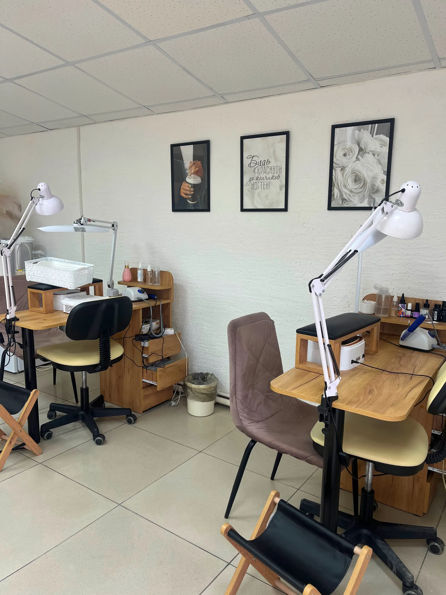
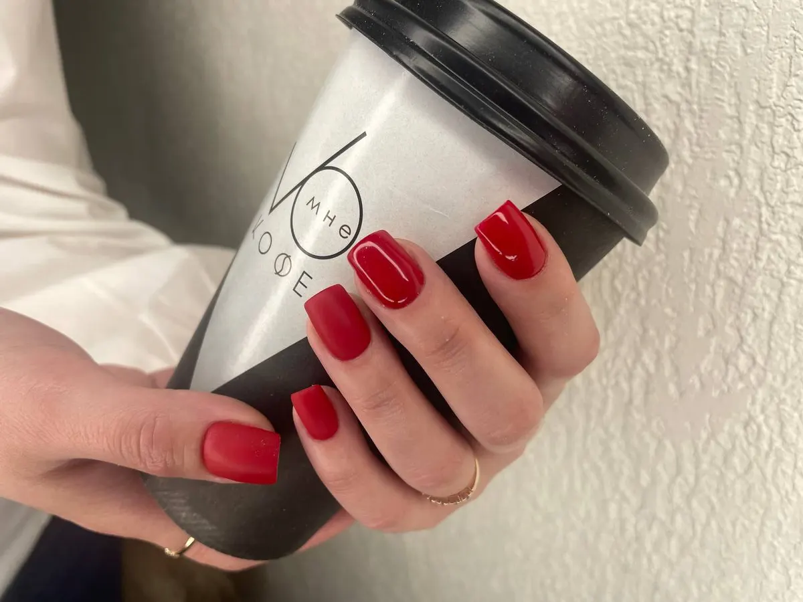
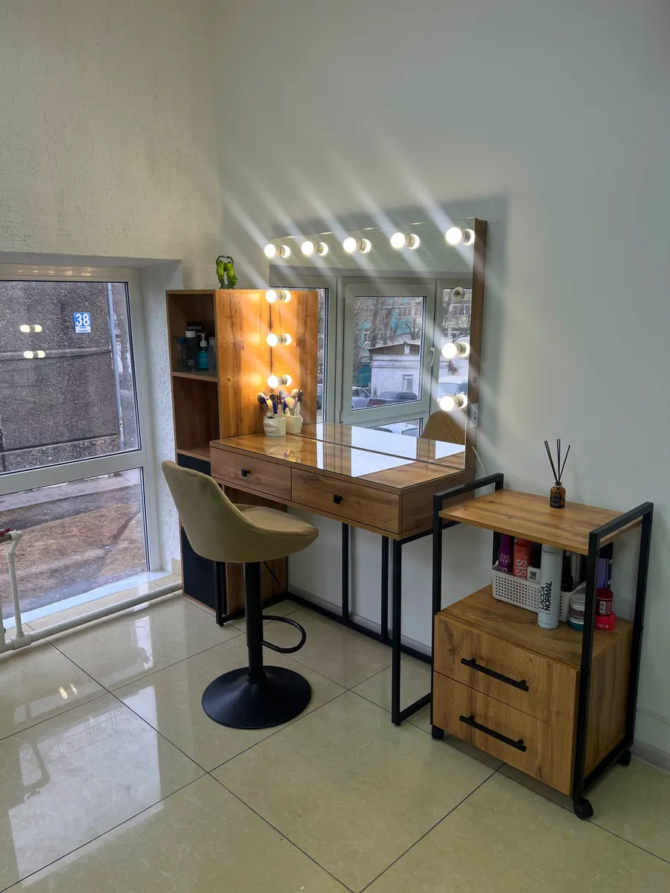
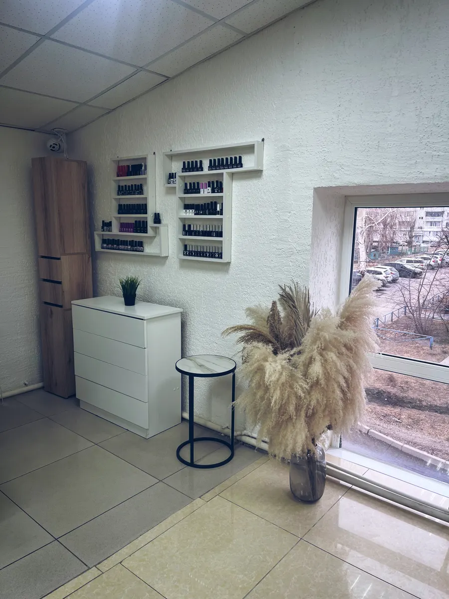

Студия маникюра · Ачинск
Маникюр в Ачинске: аккуратно, уютно, запись онлайн
Постоянные клиентки хвалят мастеров и атмосферу студии. Ежедневно с 9:00 до 21:00, ул. Гагарина, 8А.
- Рейтинг 4,9 на Яндекс.Картах, 79 оценок
- Маникюр, наращивание, педикюр
- Ежедневно с 9:00 до 21:00

Услуги и цены
Цены с карточки на Яндекс.Картах, актуальные уточняйте при записи.
Ногти
- Маникюр с покрытием2000 ₽
- Наращивание2300 ₽
- Педикюруточнить
Цены могли измениться, подтвердим при записи.
Как проходит
- 01
Записались на удобное время
В WhatsApp или по телефону +7 (962) 072-71-50.
- 02
Пришли в студию
Ул. Гагарина, 8А, 2 этаж. Клиентки пишут, что администратор предлагает чай или кофе.
- 03
Мастер сделал маникюр
Маникюр, покрытие, наращивание или педикюр – что выбрали при записи.



Что пишут клиентки
Внимательные мастера
Из отзыва: «чудесные внимательные мастера».
Приятная обстановка
Из отзыва: «Приятная обстановка, хорошие мастера».
Возвращаются снова
Из отзыва: «Хожу не первый год, всё очень нравится».
Отзывы с Яндекс.Карт
«Прекрасное место, чудесные внимательные мастера 🔥»
Илья Устинов · 15 июня
«Приятная обстановка, хорошие мастера Дарья и Нина!»
Екатерина Иванова · 22 марта
«Хожу не первый год, всё очень нравится, рекомендую 👍»
Алина Доманова · 12 июня
Отзывы с карточки на Яндекс.Картах, без правок.
Частые вопросы
Когда вы работаете?
Ежедневно с 9:00 до 21:00.
Как записаться?
Выберите услугу, день и время выше: откроется чат в WhatsApp с готовым сообщением, останется нажать «Отправить». Можно позвонить: +7 (962) 072-71-50.
Где вы находитесь?
Ачинск, ул. Гагарина, 8А, 2 этаж.
Запишитесь к своему времени
- Адрес
- ул. Гагарина, 8А, 2 этаж, Ачинск
- Часы
- Ежедневно 09:00–21:00
- Телефон
- +7 (962) 072-71-50